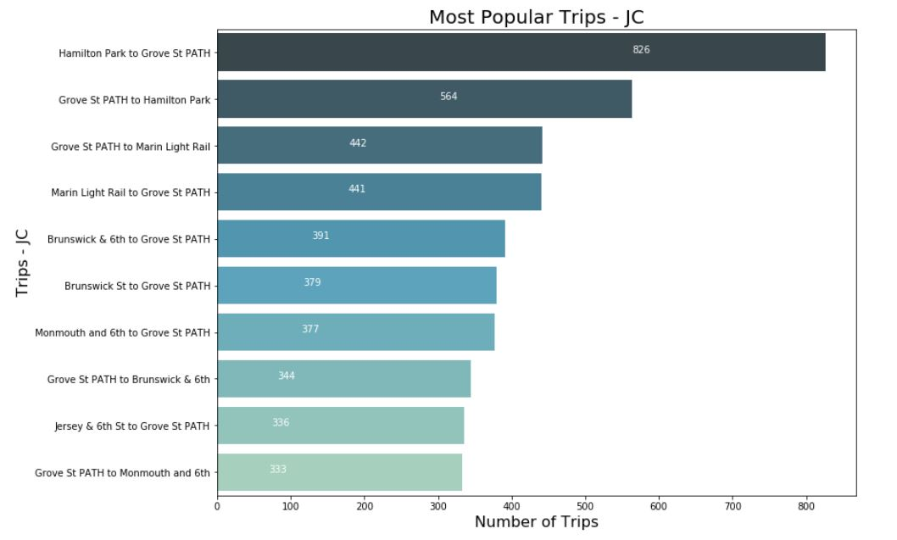

Citi Bike extended it's service by adding 50 stations and 500 bikes in Jersey City, New Jersey. It's a beautiful waterfront community, with historic brownstones, amazing restaurants and a thriving downtown. Finance companies like Bank of New York, Royal Bank of Canada, and Etrade are all located in downtown Jersey City.
The Citi Bike Annual Membership is currently $169 per year and riders can take as many rides as they want, for a max time of 45 minutes.
Most of the trips taken by Citi Bike riders in Jersey City are to the PATH train stations, which connects commuters to Midtown and Lower Manhattan in roughly 20 minutes.
The following top top stations in Jersey City account for 45% of all market share:
For the month of July, 2019, most Citi Bike riders were male (60%), with an average age of 34. According to Zillow, the median home value in Downtown Jersey City is $762,200 and the median rent is $2,650. The median household income is $100,336 a year.
Considering the price tag of housing and the high median household income, we propose Citi Bike to expand it's offerings just like CapitalOne. That is, Citi could potentially offer banking and beverages at high volume stations. Overall, the top 10 stations account for 46% of all usage.
Citi can venture into adding atms and juice bars for daily commuters. It's not uncommon for individuals to spend $10 - $15 for a healthy juice/shake and while the inventory is perishable, there are various techniques to extend shelf live.